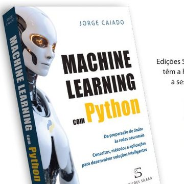
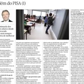

Estatística · Educação · Políticas públicas
Professor catedrático de Matemática e Estatística no ISEG — Universidade de Lisboa, e antigo Ministro da Educação e Ciência de Portugal.
Presidente da Iniciativa Educação, organização sem fins lucrativos dedicada à qualificação dos alunos em Portugal.

